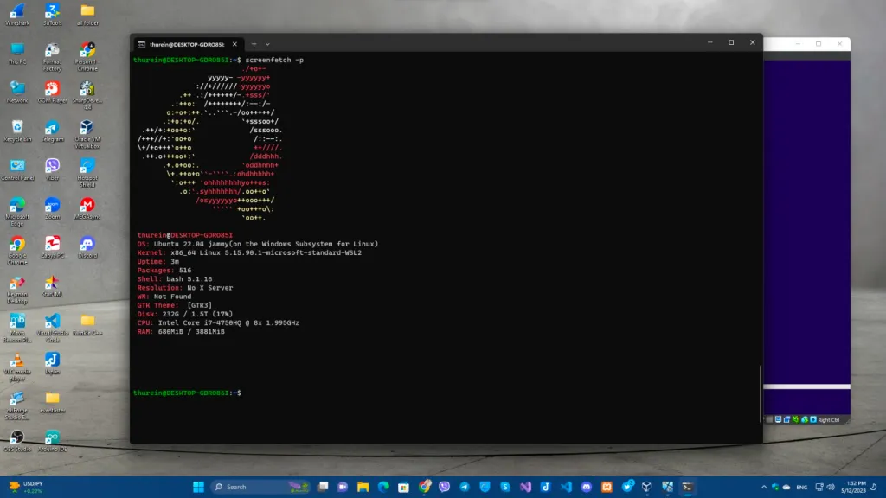
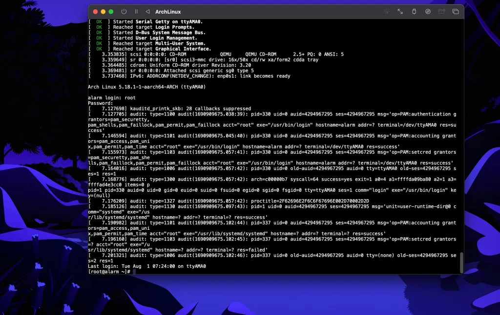
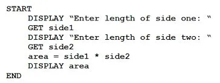
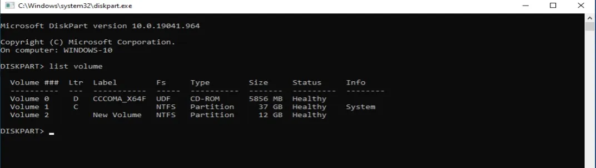
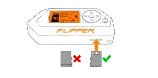
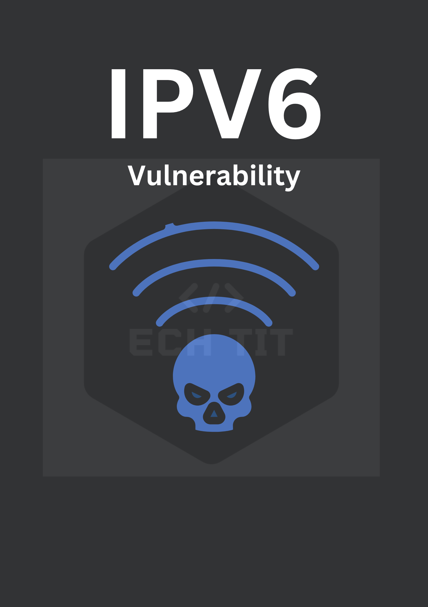

.png)
Welcome to our page!
We are passionate about sharing insights and knowledge on red teaming and cybersecurity. Our team is dedicated to providing valuable resources, training, and updates on the latest trends in the cybersecurity field. Whether you're a seasoned professional or just starting out, we aim to be your go-to source for all things red teaming and cybersecurity.
Key Points:
- Passionate about sharing insights and knowledge
- Dedicated to providing valuable resources, training, and updates
- Go-to source for all things red teaming and cybersecurity
Blog
Windows system on linux
Wsl ဆိုတာကတော့ window ပေါ်မာကိုပဲ features တစ်ခုအနေနဲ့ linux (GUIတော့မဟုတ်ပါ) ကို သုံးလို့ အဆင်ပြေအောင် Microsoft company က၂၀၁၆ ခုနစ်မှာ compatibility layer တစ်ခု ဖြစ်ပါတယ်။
Usage အနေနဲ့ကတော့ linux ကိုလည်း မပြောင်းချင်သေးဘူး ဒါပေမယ့် linux command line ကိုလည်း PCမှာစမ်းသုံးကြည့် ချင်တယ် ဆိုတဲ့ သူတွေ အတွက်တော်တော်အဆင်ပြေတဲ့ tools တစ်ခုပါ ဘာလို့လည်း ဆိုတော့ အဲ့ဒီမာ ကိုသုံးချင်တဲ့ OS (ubuntu, debian, kali) စသဖြင့် os system ပေါင်း များစွာရှိတော့ တစ်ခုပီဲးတစ်ခု လှည့်သ◌ုံးလို့လည်း ရတာပေါ့။
Read moreLinux Before Linux
windows ကနေ linux ပြောင်းမယ်ဆိုရင် main OSအနေနဲ့ မသုံးခင် vmware ဖြစ်ဖြစ် visual box မာဖြစ်ဖြစ် ၁ပတ်လောက်တော့ စမ်းသုံးကြည့်သင့်တယ်ထင်တယ် မဟုတ်ရင်ပြီးမှ အဆင်မပြေရင် တိုင်တော်တော်ပတ်ပါတယ်။
When we want to use linux Operating system, we should use in a Vmware or visual box for a week if not we can have a problems in their command or GUI(such as Arch linux).
Read morePseudocode
Programing language basic မပြောနဲ့ computer basic တောင်မသိကြတဲ့ သူတွေအနေနဲ့ သင်တန်းတွေ မတက်ခင် အရင်လုပ်ရမယ့် အရာကို အကြံပေးဆိုရင် အခုတလောပြန်ဖြေတဲ့ အဖြေကတော့ Youtube or free website တွေကနေ အရင် ကိုယ်နဲ့ သင့်တော်တဲ့ language ကို လေ့လာကြည့်ပါ
For those who don’t even know programming language basics, let alone computer basics, if you advise what to do first before attending the courses, the current answer is to learn the language that suits you first from YouTube or free websites. Lately, more and more students don’t teach pseudocode deskchecking concepts because they say they don’t need them, so the trainees also put less effort into thinking. That’s why I’m going to study programming now.
Read moreHDD volume Hiding Technique
ပထမဆုံး ကျွန်တော်တို့ hidden လုပ်ချင်တဲ့ volume ကို သိရပါမယ် အခုတော့ ကျွန်တော့်မှာ volume မရှိသေးတဲ့အတွက် volume တစ်ခုတည်ဆောက်ဖို့ လက်ရှိ ရှိနေတဲ့ C ကနေ partition ခွဲပြီး Dဆိုပြီး volume တစ်ခုတည်ဆောက်လိုက်ပါမယ်။
လက်ရှိ Cထဲကနေ နောက် volume တစ်ခု တည်ဆောက်ဖို့ဆို ကျွန်တော်တို့ shrink volumeလုပ်ရမယ် ပြီးရင်တော့ တဆင့်ချင်းဆီ custom လုပ်ပြီးတော့ volume တစ်ခု တည်ဆောက်ထားလိုက်ပါမယ်။
Read moreFlipper Zero Setup
Unboxing တွေ ဘာတွေတော့ အရမ်းထူးထူး ခြားခြားမရှိလို့ ကျော်လိုက်ကြတာပေါ့ flipper zero လည်းလက်ထဲရောက်နေပြီ ဆိုရင် sd card ထည့် original USB နဲ့ PCနဲ့ ချိတ်လို့ပြီးသွားရင် ပထမဆုံး အနေနဲ့ https://flipperzero.one/update ကနေ flipper ကို download လုပ်ပြီး pc ကနေ file import and update လုပ်ဖို့ downလိုက်ရင် ကျွန်တော်တို့ flipper ကို pc က နေ control access ရပါလိမ့်မယ် update လုပ်ပြိးသွားလို့ external sourcesတွေ ထည့်ချင်ရင်တော့
https://github.com/UberGuidoZ/Flipper ဒီကနေ git clone to github desktop နဲ့ ဆိုရင် အခြေခံ လိုအပ်တဲ့ package တွေတော့ အဆင်ပြေသွားပါလိမ့်မယ်။ git clone steps မှာ git clone ကို Vscode နဲ့ terminal မာ clone ရင် တော့ antivirus and firewall ကို off ထားရပါမယ် zip file အနေနဲ့ down ရင်လည်း အချိန်တကယ် ကြာပါတယ် ကျွန်တော့်တုန်းက စမ်းတုန်းကတော့ 5နာရီလောက်ကြာတဲ့ အတွက် github desktop မာပဲ clone လုပ်စေချင်ပါတယ်။
Read moreIPv6 ရဲ့ vulnerability (အားနည်းချက်)
IPv4 address နည်းလာတဲ့ အတွက် IPv6 ကိုသုံးလာကြရတဲ့ အခါ IPv6 ရဲ့ လုံခြုံရေး အားနည်းချက်တခုကို သိထားဖို့ လိုအပ်လာပါတယ်။
ကျွန်တော်တို့တွေ အရင်ကဆို Windows ရဲ့ IPv6 feature ကို Network Card Properties မှာ သွားပြီး Disable လုပ်ကြတာကို မှတ်မိကြမယ်ထင်ပါတယ်။ အဲတုန်းကဆို ဘာလို့လုပ်လဲ ဆိုတာ သိပ်နားမလည်ဘူး။ တကယ်က ဒီလိုဗျ IPv4 ကော IPv6 ကော 2 မျိုးစလုံး သုံးထားတဲ့ Host တခု (သို့မဟုတ်) IPv6 သုံးထားတဲ့ Host တခုက Network ကို ချိတ်ပြီဆိုတာနဲ့ သူက IPv6 enable လုပ်ထားတဲ့ Router ဆီကို ICMPv6 (type 133) Router Solicitation (RS) message ကို ပို့ပါတယ်။
Read moreWhy should we use print() instead of alert()

XSS vulnerability ပေါက်နေတာမျိုးတွေ တွေ့တဲ့အခါ များသောအားဖြင့် ကျွန်တော်တို့က alert() function ကိုပဲအသုံးများပေမယ့် အကယ်၍ ကျွန်တော်တို့က Chrome version ကိုမှ 92 (20 july 2021)ထက် update version ဖြစ်ပြီးသုံးနေမယ်ဆိုရင်တော့ Chrome ကနေပြီး alert() functionခေါ်လို့ရမှာမဟုတ်တော့ပါဘူး။
အဲ့တာကြောင့် Google chrome version date 20 july 2021ကနေစပြီး XSS PoCsပြဖို့အတွက် alert() function ပြီးတော့ ping back လုပ်တာမျိုးတွေကိုလည်း Chrome ရဲ့ javascript obfuscators ကနေပြီးတော့ disable လုပ်တော့ console.log() ကိုလည်း သုံးလို့မရနိုင်ပါဘူး။
Read moreVlog
Sample Videos
Disk Volume hiding in windows step by step Tutorial
How to create a port scanner with python
Sample Video Title
How computer work and Software development life cycle
Video Title 1
How to use Virtual Machine on M1 and M2 chip base Macbook using UTM
Video Title 1
How to create a table with Microsoft access and most common error in there
Tools
Most of my tools are written in Python and C family languages, and they are primarily designed for red teaming purposes.